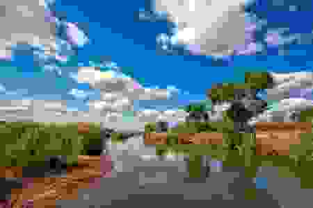

resmush is a R package that allow users to optimize and compress images using reSmush.it. reSmush.it is a free API that provides image optimization, and it has been implemented on Wordpress, Drupal or Magento.
Some of the features of reSmush.it are:
- Free optimization services, no API key required.
- Optimize local and online images.
- Image files supported:
png,jpg/jpeg,gif,bmp,tiff,webp. - Max image size: 5 Mb.
- Compression via several algorithms:
Installation
You can install the development version of resmush from GitHub with:
# install.packages("devtools")
devtools::install_github("dieghernan/resmush")Alternatively, you can install resmush using the r-universe:
# Install resmush in R:
install.packages("resmush", repos = c(
"https://dieghernan.r-universe.dev",
"https://cloud.r-project.org"
))Example
Compressing an online jpg image:
library(resmush)
url <- paste0(
"https://raw.githubusercontent.com/dieghernan/",
"resmush/main/img/jpg_example_original.jpg"
)
resmush_url(url, outfile = "man/figures/jpg_example_compress.jpg")
Original picture (top) 178.7 Kb and optimized picture (bottom) 45 Kb (Compression 74.8%)
The quality of the compression can be adjusted in the case of jpg files using the parameter qlty. However, it is recommended to keep this value above 90 to get a good image quality.
resmush_url(url,
outfile = "man/figures/jpg_example_compress_low.jpg", qlty = 10,
verbose = TRUE
)
#> ✔ Optimizing https://raw.githubusercontent.com/dieghernan/resmush/main/img/jpg_example_original.jpg:
#> ℹ Effective compression ratio: 96.9%
#> ℹ Current size: 5.6 Kb (was 178.7 Kb)
#> ℹ Output: 'man/figures/jpg_example_compress_low.jpg'
Low quality image due to a high compression rate.
All the functions return invisibly a data set with a summary of the process. The next example shows how when compressing a local file.
png_file <- system.file("extimg/example.png", package = "resmush")
# For the example, copy to a temporary file
tmp_png <- tempfile(fileext = ".png")
file.copy(png_file, tmp_png, overwrite = TRUE)
#> [1] TRUE
summary <- resmush_file(tmp_png)
tibble::as_tibble(summary[, -c(1, 2)])
#> # A tibble: 1 × 4
#> src_size dest_size compress_ratio notes
#> <chr> <chr> <chr> <chr>
#> 1 239.9 Kb 70.7 Kb 70.5% OK ;)Other alternatives
-
xfun package by Yihui Xie has the following functions that optimize image files:
-
xfun::tinify()is similar toresmush_file()but uses TinyPNG. API key required. -
xfun::optipng()compress local files with OptiPNG (that needs to be installed locally).
-
- tinieR package by jmablog. R package that provides a full interface with TinyPNG.
-
optout package by @coolbutuseless. Similar to
xfun::optipng()with additionall options. Needs additional software installed locally. - Imgbot: Automatic optimization for files hosted in GitHub repos.
Citation
Hernangómez D (2024). resmush: Optimize and Compress Image Files with reSmush.it. https://dieghernan.github.io/resmush/.
A BibTeX entry for LaTeX users is
@Manual{R-resmush,
title = {{resmush}: Optimize and Compress Image Files with {reSmush.it}},
author = {Diego Hernangómez},
year = {2024},
version = {0.0.0.9000},
url = {https://dieghernan.github.io/resmush/},
abstract = {Compress local and online images using the reSmush.it API service <https://resmush.it/>.},
}